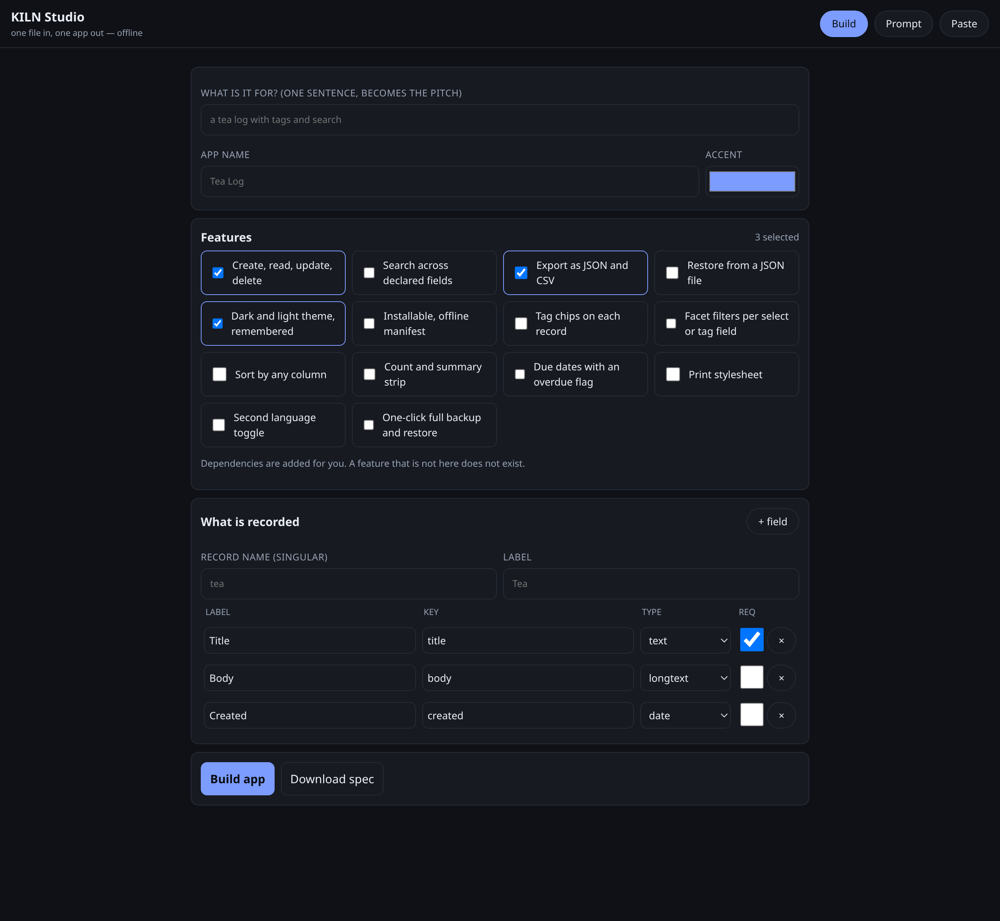
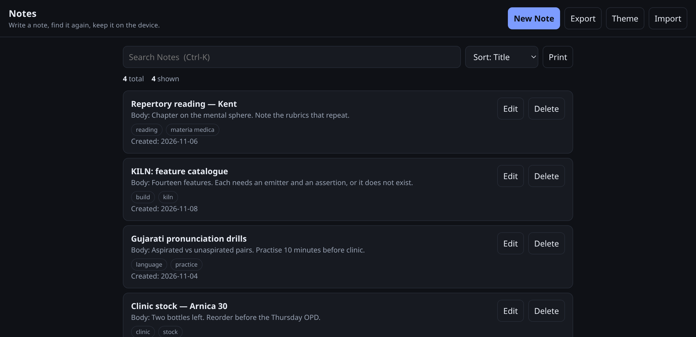

KILN compiles a small specification into a complete, working, offline application — one HTML file. No model in the loop, no network, no dependencies to install.
A spec is the only input. Whether you type a sentence, paste a model's reply, or fill a form on a phone, the same compiler runs and the same checks pass.
Say what the app is for. Aliases, tf-idf and slot filling turn it into a spec. No model, no key, no network.
kiln new "a tea log with tags"
PROMPT.md carries the catalogue with it. Paste the reply back and
adopt repairs it until it builds.
kiln prompt → paste → kiln adopt
studio.html is the same compiler in a browser. Fill the form, tap
Build, the app downloads.
open studio.html
Both screenshots are real, rendered from the files in this repository.

KILN Studio — pick features, describe the record, build. Runs on a phone, offline.

A generated app — 21 KB, one file, storage on the device, all four failure paths handled.
Every arrow is deterministic. The same spec produces the same bytes.
intent.pyspec.pycompose.pyemit.pyverify.pyguards.pyThis is the difference between a skeleton and an app. Nothing here needs writing per application.
| Part | Behaviour |
|---|---|
| CRUD | List, create, edit, delete — generated from the entity schema |
| Storage | Namespaced localStorage, versioned, quota-aware |
| Search | Field scan with Ctrl-K focus |
| Export | JSON and CSV download, JSON restore |
| Theme | Dark and light, remembered |
| Failure path | Bad input, no network, storage full, corrupt state — all four surfaced |
| Docs | README, manifest, changelog, licence, smoke tests |
Python 3.9 or newer. Nothing else.
# whole pipeline in one command python3 -m kiln pipeline "a reading log with tags and a rating" --zip # or step by step python3 -m kiln new "a notes app with tags, search and export" python3 -m kiln build specs/app-notes.md -o out python3 -m kiln verify out/app-notes ok app-notes.md 43 checks, 0 failed
KILN is free for noncommercial use. Support takes the usual shapes, and the first two cost nothing.
Build something small and tell me what broke. A failed spec is worth more than a star.
The licence is PolyForm Noncommercial. Selling, or shipping inside a paid product, needs a separate written licence.
A new feature means a catalogue entry, a runtime gate, an assertion and a test. The checklist is short.